CellsКомірки
Every brick voltage, min / max, imbalance and dead-cell detection.Напруга кожного блока, мін / макс, розбаланс і виявлення мертвих комірок.
Battery cells, pack health, motors, charging and HV state — live on your phone through an inexpensive OBD-II adapter. No account, no cloud. Комірки батареї, стан пака, мотори, зарядка й HV — наживо на телефоні через недорогий OBD-II адаптер. Без акаунта й без хмари.
Key readings are cross-checked against the car's own diagnostic values on real Model 3 / Y. Tiles marked ⓘ tell you exactly which signal they show. Ключові показники звірені з діагностичними значеннями самого авто на реальних Model 3 / Y. Плитки з ⓘ показують, який саме сигнал за ними стоїть.
Every brick voltage, min / max, imbalance and dead-cell detection.Напруга кожного блока, мін / макс, розбаланс і виявлення мертвих комірок.
Voltage, current, state of charge, health (SOH), nominal and remaining energy.Напруга, струм, рівень заряду, стан (SOH), номінальна й залишкова енергія.
Speed, power and torque per motor, pedal, gear, drive-unit temperatures and an acceleration timer.Швидкість, потужність і момент по моторах, педаль, передача, температури приводу й таймер розгону.
Line power and voltage, charger and charge-port state, charge limit.Потужність і напруга лінії, стан зарядного й порту, ліміт заряду.
Contactor and BMS states, HV bus and pack voltages.Стан контакторів і BMS, напруги HV-шини та пака.
Live frame rate and per-ID filters; Raw bus mode works with any CAN car.Частота наживо й фільтри по ID; режим «сира шина» — для будь-якого CAN-авто.
Record the bus and export to CSV for your own analysis.Запис шини й експорт у CSV для власного аналізу.
Save or share any dashboard as PNG or PDF, with date, car and VIN.Збережіть чи поширте дашборд у PNG або PDF — з датою, авто й VIN.
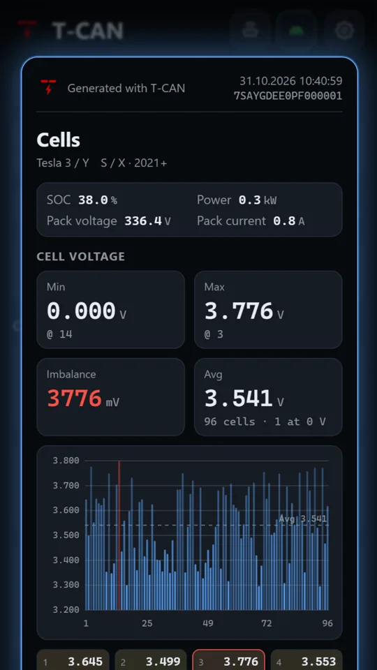
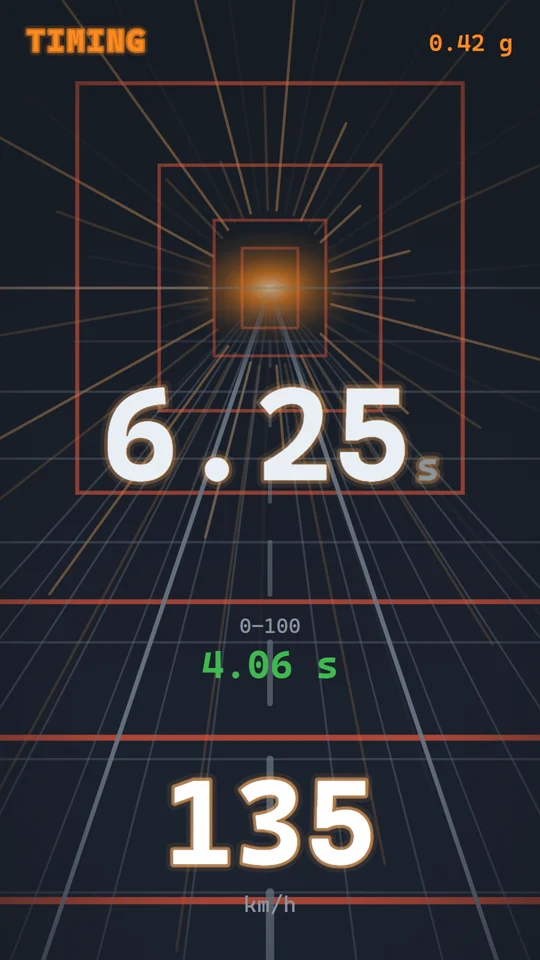
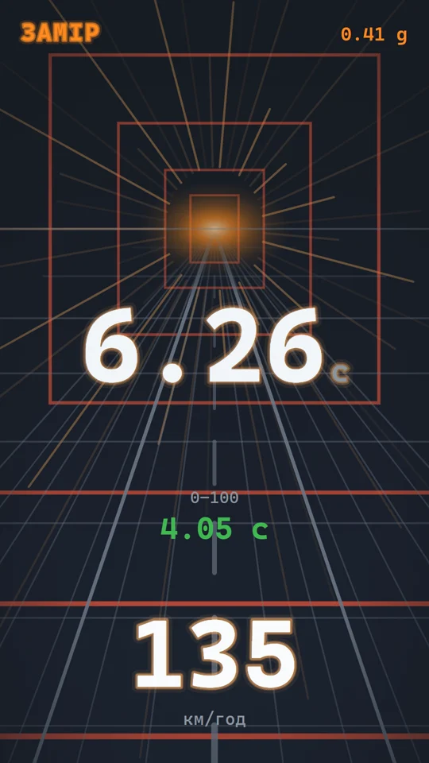
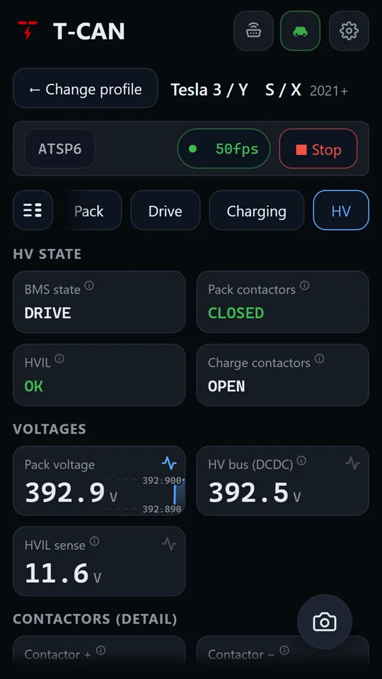
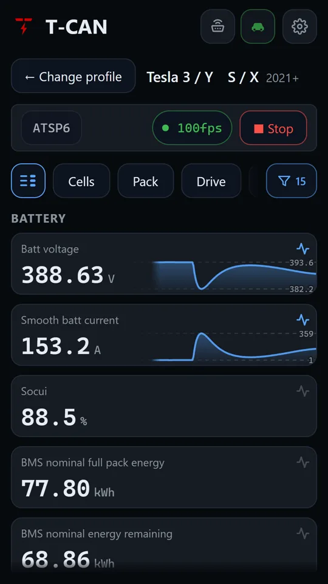
The battery management system reports the voltage of every cell group, and T-CAN draws all of them live: 96 bars on a typical Model 3 / Y pack. The scale follows the actual spread, so even a few millivolts of difference are visible. Система керування батареєю передає напругу кожної групи комірок, і T-CAN малює їх усі наживо: 96 стовпців на типовій батареї Model 3 / Y. Шкала підлаштовується під реальний розкид, тож видно навіть кілька мілівольт різниці.
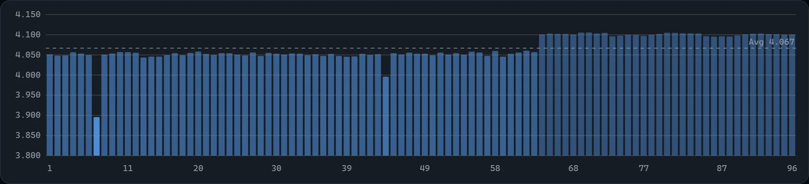
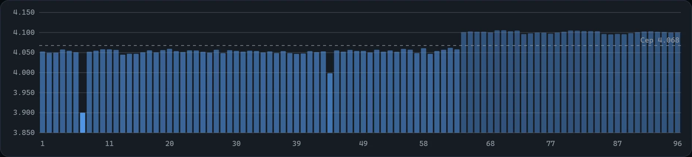
The lowest and highest cells are named and outlined in the cell grid under the chart.Найнижчу й найвищу комірки названо за номером і обведено в сітці під графіком.
The spread turns green, amber or red only when the car is at rest: under load it grows naturally and would raise false alarms.Розкид фарбується в зелений, жовтий чи червоний лише в спокої: під навантаженням він природно зростає й давав би хибні тривоги.
LFP or NCA / NCM is detected from the bus, and the imbalance threshold follows it.LFP чи NCA / NCM визначається з шини, і поріг розбалансу підлаштовується під неї.
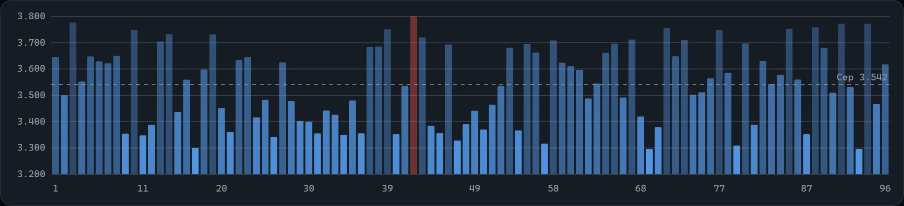
Stop, wait for READY and go. The timer starts the moment the car moves, catches each split between speed readings and keeps every run on your phone. In miles it times 0–60 and 60–120 mph. Зупиніться, дочекайтесь READY і рушайте. Замір починається, щойно авто рушило, кожен відрізок ловиться між показами швидкості, а всі заїзди зберігаються на телефоні. У милях — 0–60 і 60–120 mph.
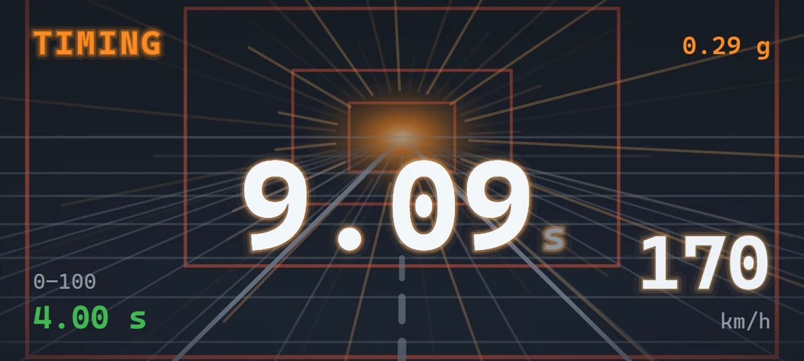
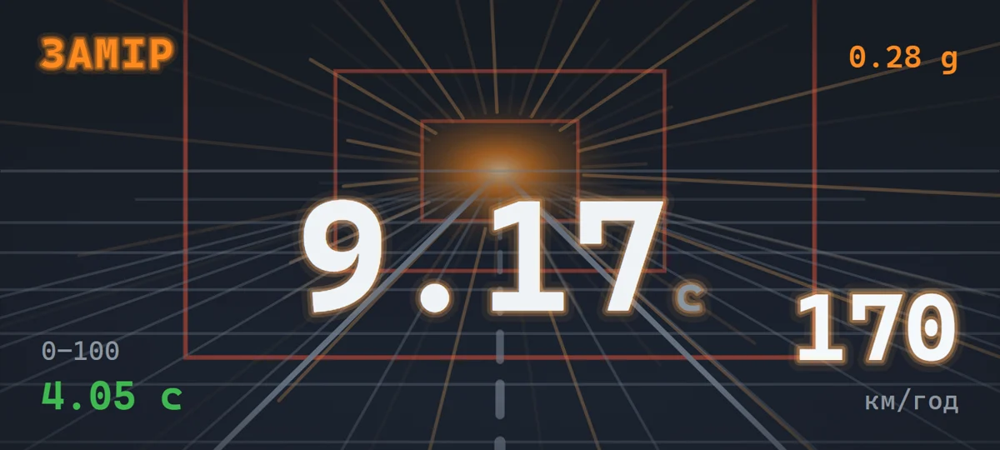
With STN adapters (OBDLink, vLinker), CANserver and S3XY Commander the timer sits above all Drive tiles. On a basic ELM327 pick Acceleration at the top of the Drive dashboard: the app then listens to speed alone, so it arrives without gaps.З адаптерами на STN (OBDLink, vLinker), CANserver і S3XY Commander таймер стоїть над усіма плитками «Приводу». На звичайному ELM327 оберіть «Розгін» угорі дашборда «Привід»: апка тоді слухає лише швидкість, і вона надходить без пропусків.
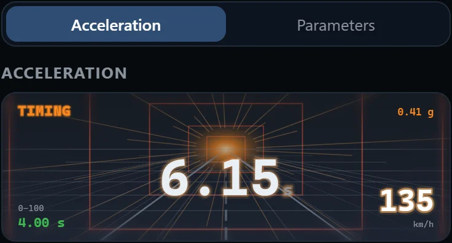
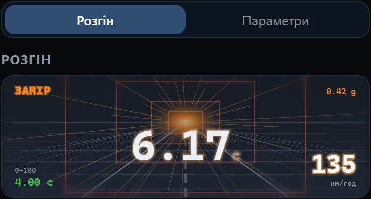
The corner button opens the timer full screen; turn the phone and the layout follows. The same button or Back returns to the dashboard.Кнопка в куті відкриває таймер на весь екран; поверніть телефон — розкладка підлаштується. Та сама кнопка чи «Назад» повертає до дашборда.
Tap the timer for the list of runs: date, splits and top speed. Stored only on your phone.Тап по таймеру — список заїздів: дата, відрізки й максимальна швидкість. Зберігається лише на телефоні.
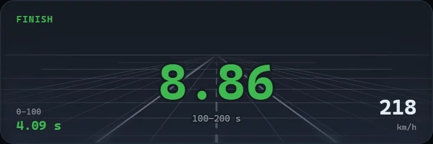
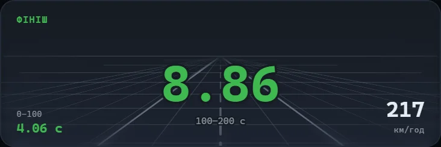
A five-minute tour of every dashboard on real data from two cars, and a quick walk through the settings. Пʼятихвилинний огляд усіх дашбордів на реальних даних двох машин і коротко про налаштування. Відео англійською, з субтитрами.
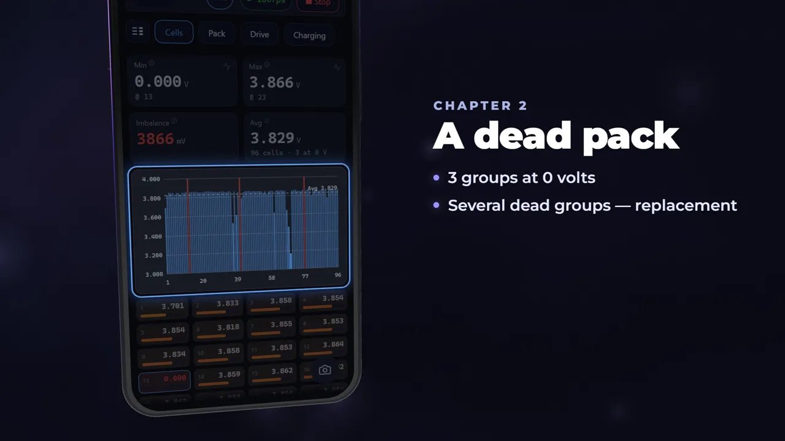
4:52Cells, a dead pack, battery health, the 0–100 timer, a full home charging session, HV and your own parameters.Комірки, мертвий пак, здоровʼя батареї, таймер 0–100, повна домашня зарядка, HV і власні параметри.
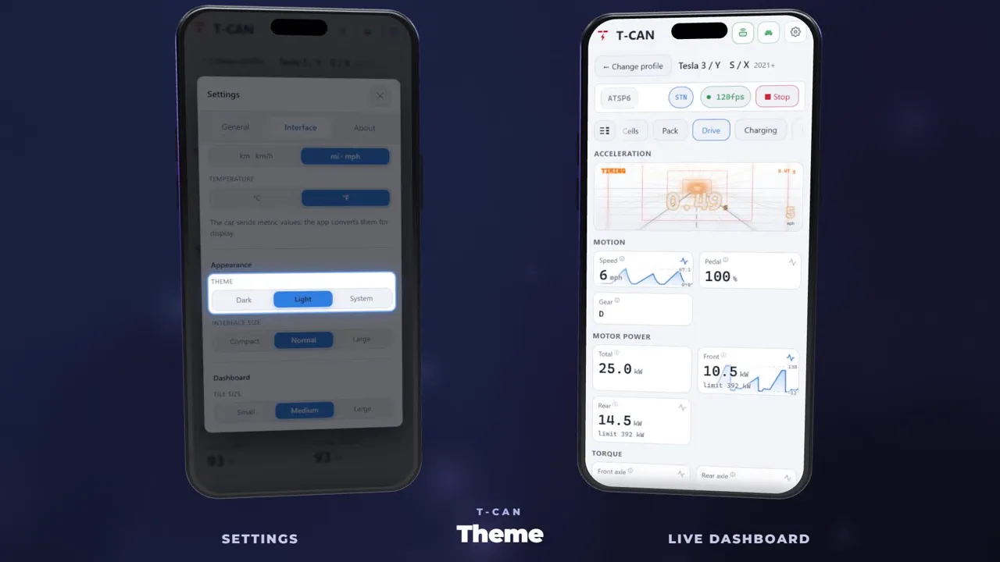
1:20Language, units, theme, sizes, startup and snapshots, with a live dashboard reacting next to it.Мова, одиниці, тема, розміри, запуск і знімки, а поруч живий дашборд, що реагує на зміни.
The player loads from YouTube only after you press play.Програвач завантажується з YouTube лише після натискання.
Not sure your adapter works? Start with T-CAN Lite: it checks the connection and shows a few live readings.Не впевнені, що адаптер підійде? Почніть з T-CAN Lite: він перевіряє зʼєднання й показує кілька параметрів наживо.
Any ELM327-compatible OBD-II adapter over Bluetooth, Bluetooth LE or Wi-Fi, plus CANserver and S3XY Commander. These are the ones we have checked ourselves.Підходить будь-який ELM327-сумісний OBD-II адаптер через Bluetooth, Bluetooth LE чи Wi-Fi, а також CANserver і S3XY Commander. Ось ті, які ми перевірили самі.
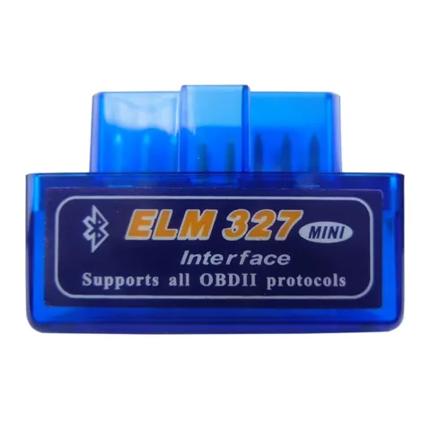
The cheapest option: fine for a connection check and basic readings, values update slower.Найдешевший варіант: для перевірки звʼязку й базових показників, значення оновлюються повільніше.
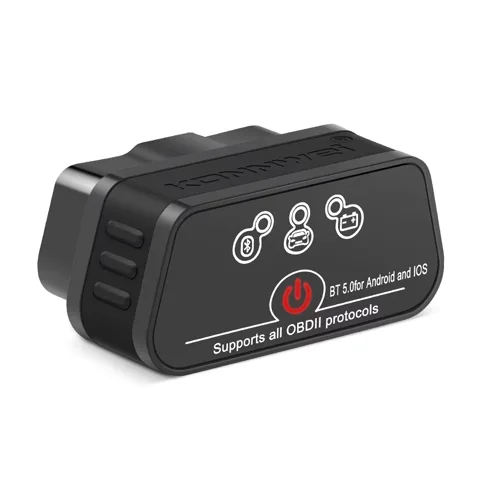
Sold as "for Android and iOS".Продається як «для Android та iOS».
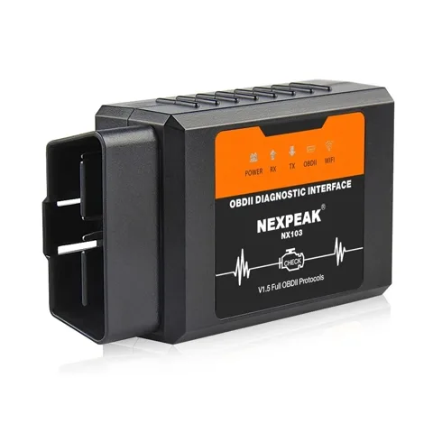
Join the adapter's Wi-Fi first; meanwhile the phone's internet goes over mobile data.Спершу підключіться до Wi-Fi адаптера; інтернет тим часом іде через мобільні дані.
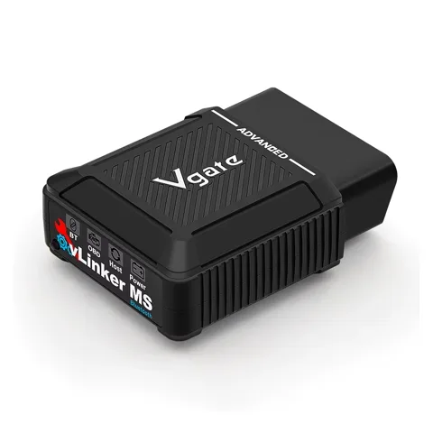
Filters CAN messages in hardware, so values update noticeably more often.Фільтрує CAN-повідомлення апаратно, тож значення оновлюються помітно частіше.
A Tesla's diagnostic connector is not a standard OBD-II socket, so the adapter needs a cable for your model. Tap a photo to enlarge it.Діагностичний роз'єм Tesla — не стандартне гніздо OBD-II, тож адаптеру потрібен кабель саме для вашої моделі. Натисніть на фото, щоб збільшити його.
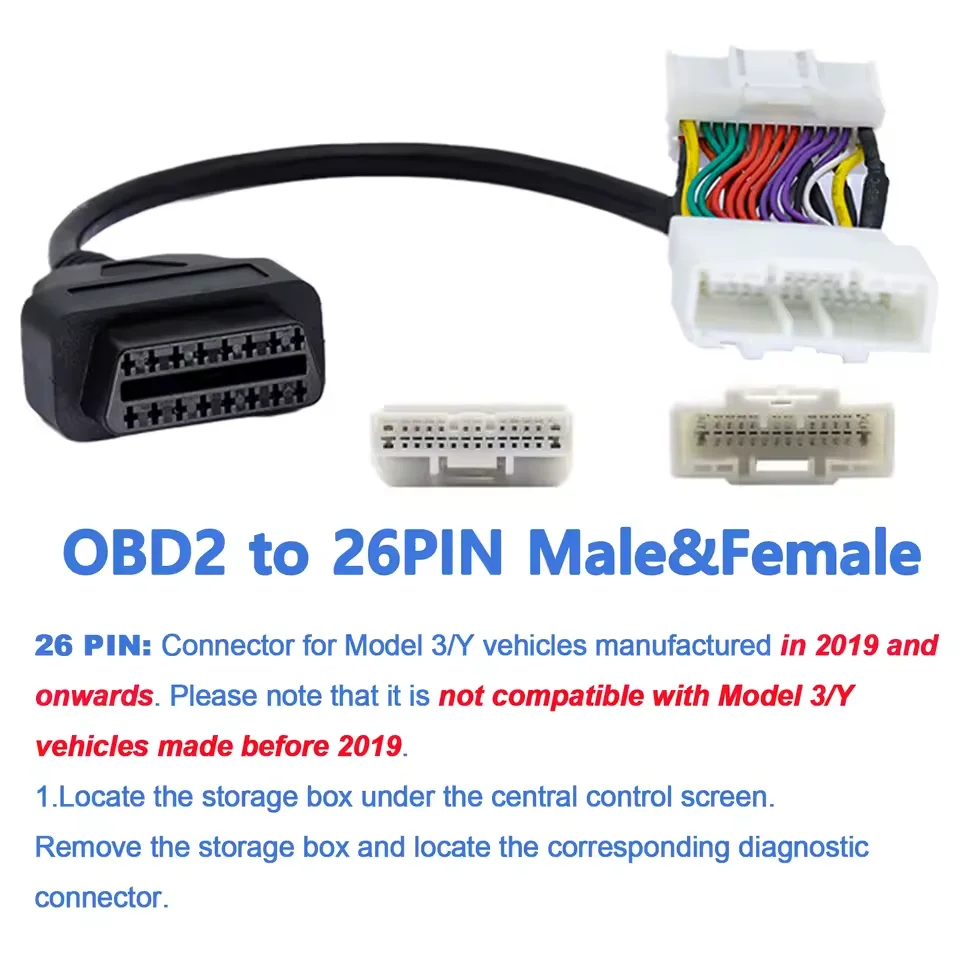
Built in 2019 and later. Male + female: the cable goes in between the two halves of the car's connector.Випущені з 2019 року. Тато + мама: кабель вмикається між двома половинками роз'єму авто.
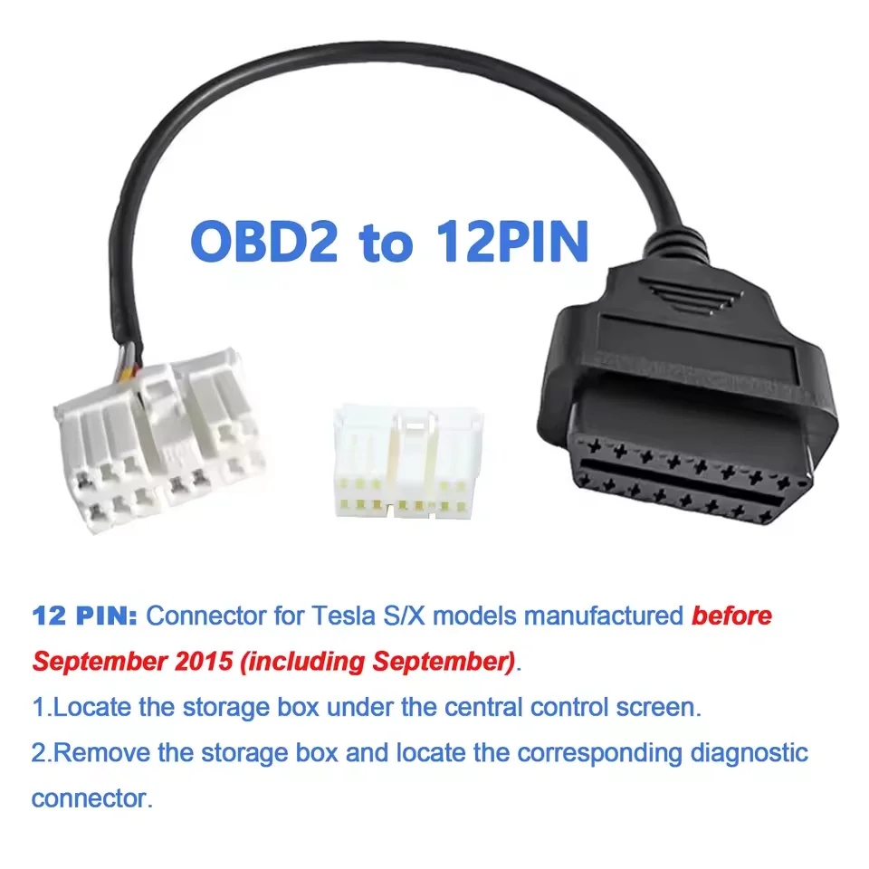
Built up to and including September 2015.Випущені до вересня 2015 включно.
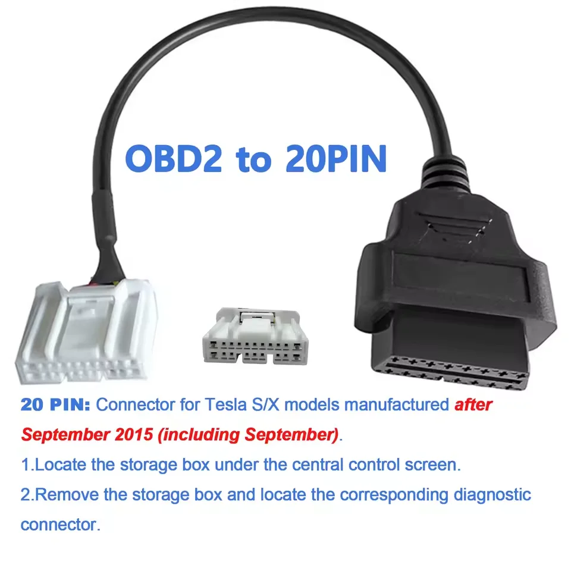
Built after September 2015.Випущені після вересня 2015.
Model years are given as stated by the cable sellers. For Model 3 built before 2019 and refreshed Model S / X (2021+), check the connector in your car before ordering.Роки вказано за даними продавців кабелів. Для Model 3, випущених до 2019 року, та оновлених Model S / X (2021+) перевірте роз'єм у своєму авто перед замовленням.
No account, no server, no analytics. T-CAN talks to your adapter and nothing else.Без акаунта, сервера й аналітики. T-CAN спілкується лише з вашим адаптером.
Questions, bug reports, requests for new car profiles. Please include your car model and year, adapter model and the app version from the About tab.Питання, помилки, запити на нові профілі авто. Вкажіть модель і рік авто, модель адаптера та версію застосунку з вкладки «Про програму».